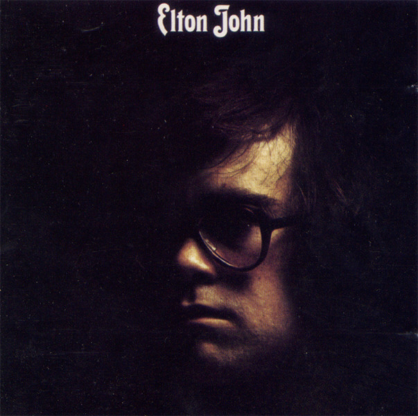

안녕하세요, 라보엠입니다.
오늘은 팝 음악사에 길이 남을 명곡, 엘튼 존(Elton John)의 ‘Your Song’을 소개해드리겠습니다. 1970년 10월 26일 발매된 이 곡은 엘튼 존과 그의 오랜 파트너 버니 토핀(Bernie Taupin)이 함께 만든 첫 번째 세계적 히트곡이자, 엘튼 존의 이름을 전 세계에 알린 대표작입니다. 엘튼 존의 2집 [Elton John]의 첫 트랙으로 수록된 ‘Your Song’은 영국과 미국을 비롯한 여러 국가에서 싱글 차트 톱10에 오르며, 현재까지도 수많은 뮤지션과 리스너들에게 사랑받고 있습니다.
시대를 초월한 명곡의 힘
‘Your Song’의 가사는 버니 토핀이 17세의 나이에, 엘튼 존 부모님의 집 부엌 식탁에서 아침 식사를 하다 즉흥적으로 써내려간 것으로 유명합니다. 당시 두 사람은 엘튼 존의 부모님 집에 함께 살며 음악 작업에 몰두하고 있었죠. 버니 토핀은 “특별한 영감이 아니라, 그냥 평범한 어느 날 아침에 쓴 것”이라고 회상합니다. 이렇게 탄생한 가사와, 엘튼 존이 단 20분 만에 완성한 피아노 멜로디가 만나, 세상에 둘도 없는 순수한 러브송이 탄생했습니다.
엘튼 존의 생애를 담은 영화 로켓맨(2019)(Rocketman)에서도 'Your Song' 탄생 장면이 그려지는데요, 엘튼 존(타론 에저튼 분)과 버니 토핀(제이미 벨 분)이 음악적 파트너십을 맺고, 엘튼 존이 처음으로 자신만의 곡을 완성하는 감동적인 순간을 그립니다. 이 장면은 엘튼 존의 집 부엌에서 버니가 가사를 건네고, 엘튼 존이 피아노 앞에 앉아 즉흥적으로 멜로디를 붙이기 시작하면서 시작됩니다. 엘튼 존은 조용히 피아노 건반을 두드리며 “It’s a little bit funny, this feeling inside…”로 노래를 시작하고, 곡의 아름다운 멜로디와 진심 어린 가사가 거실을 가득 채웁니다. 버니와 그의 가족들이 그 모습을 지켜보며, 엘튼 존이 처음으로 자신의 음악적 재능을 세상에 드러내는 순간이자, 두 사람의 우정과 창작의 시작을 상징적으로 보여줍니다
가사와 메시지 – 서툴지만 진심 어린 사랑의 고백
가사It's a little bit funny this feeling inside
I'm not one of those who can easily hide
I don't have much money but boy if I did
I'd buy a big house where we both could live
If I was a sculptor, but then again, no
Or a man who makes potions in a travelling show
I know it's not much but it's the best I can do
My gift is my song and this one's for you
And you can tell everybody this is your song
It may be quite simple but now that it's done
I hope you don't mind I hope you don't mind
that I put down in words
How wonderful life is while you're in the world
I sat on the roof and kicked off the moss
Well a few of the verses well they've got me quite cross
But the sun's been quite kind while I wrote this song
It's for people like you that keep it turned on
So excuse me forgetting but these things I do
You see I've forgotten if they're green or they're blue
Anyway the thing is what I really mean
Yours are the sweetest eyes
I've ever seen
‘Your Song’의 가사는 사랑에 서툰 평범한 사람이, 자신의 마음을 솔직하게 고백하는 내용입니다.
“It's a little bit funny, this feeling inside / I'm not one of those who can easily hide / I don't have much money, but boy, if I did / I'd buy a big house where we both could live.”
이처럼 화자는 물질적 여유는 없지만, 진심을 담아 노래로 자신의 마음을 전합니다.
“내가 가진 건 이 노래뿐이지만, 당신을 위해 부른다”는 메시지는 소박하면서도 깊은 울림을 줍니다.
특히 후렴구는, 사랑하는 이의 존재만으로도 세상이 얼마나 아름다운지 담담하게 고백합니다.
이런 솔직함과 소박함이 곡의 가장 큰 매력입니다.
음악적 특징 – 피아노와 스트링의 따뜻한 조화
‘Your Song’은 엘튼 존의 피아노 연주가 중심을 이루고, 어쿠스틱 기타와 스트링(현악기), 그리고 담백한 리듬 섹션이 곡의 따뜻한 분위기를 완성합니다. 레온 러셀의 영향을 받은 피아노 연주와, 폴 버크마스터의 스트링 편곡이 어우러져, 단순하면서도 감성적인 사운드를 들려줍니다. 엘튼 존의 부드럽고 진심 어린 보컬은 곡 전체에 순수한 감정을 더하며, 듣는 이로 하여금 자연스럽게 미소 짓게 만듭니다.
‘Your Song’은 발매와 동시에 평단과 대중 모두에게 극찬을 받았고, 빌보드 핫100 8위, 영국 싱글 차트 7위에 오르며 엘튼 존의 국제적 성공을 이끌었습니다. 이후 수많은 아티스트들이 리메이크하며, 영화, 광고, 드라마 등 다양한 매체에서 사용되어 그 가치를 더욱 높였습니다.버니 토핀은 “이 곡은 순수한 사랑의 나이브함을 담은 곡”이라고 말합니다. 실제로 ‘Your Song’은 사랑 앞에서 서툴지만, 진심만은 누구보다 깊은 이들의 마음을 대변하며, 세대를 넘어 꾸준히 사랑받고 있습니다.
맺음말
엘튼 존의 ‘Your Song’은 화려한 수식어 없이도 사랑의 본질을 가장 아름답게 표현한 곡입니다. 누구나 한 번쯤 느낀 적 있는 서툰 고백, 그리고 그 안에 담긴 진심이 고스란히 음악으로 전해집니다. 오늘 하루, ‘Your Song’을 들으며 사랑과 삶의 소중함을 다시 한 번 느껴보시길 바랍니다. 이 곡이야말로, 누군가에게 꼭 들려주고 싶은 진짜 ‘당신의 노래’입니다.
